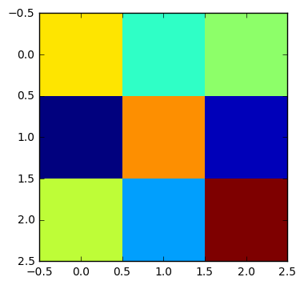
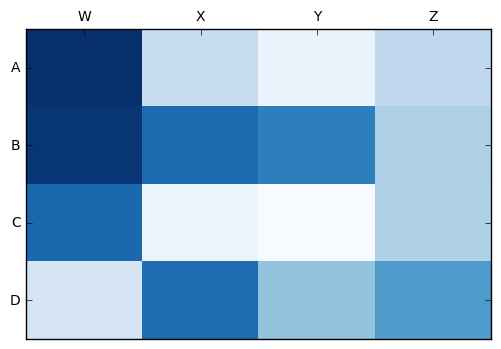

Jupyter QtConsole 4.2.1
Python 3.5.2 |Anaconda 4.2.0 (64-bit)| (default, Jul 5 2016, 11:41:13) [MSC v.1900 64 bit (AMD64)]
Type "copyright", "credits" or "license" for more information.
IPython 5.1.0 -- An enhanced Interactive Python.
? -> Introduction and overview of IPython's features.
%quickref -> Quick reference.
help -> Python's own help system.
object? -> Details about 'object', use 'object??' for extra details.
In [1]: from pylab import *
...: data = random((3,3))
...: figure(1)
...: imshow(data, interpolation='none')
...: figure(2)
...: pcolor(flipud(data))
...:
Out[1]: <matplotlib.collections.PolyCollection at 0x2699f283ba8>
In [2]: show()

In [3]: data
Out[3]:
array([[ 0.65170007, 0.40538611, 0.51460865],
[ 0.0154518 , 0.73656631, 0.06519283],
[ 0.57197244, 0.28509951, 0.96945738]])
In [4]: d = np.array([ 0.65170007, 0.40538611, 0.51460865,0.0154518 , 0.73656631, 0.06519283 ])
In [5]: pcolor(d)
---------------------------------------------------------------------------
ValueError Traceback (most recent call last)
<ipython-input-5-54741fa70545> in <module>()
----> 1 pcolor(d)
C:\Users\azazel\Anaconda\lib\site-packages\matplotlib\pyplot.py in pcolor(*args, **kwargs)
3081 ax.hold(hold)
3082 try:
-> 3083 ret = ax.pcolor(*args, **kwargs)
3084 finally:
3085 ax.hold(washold)
C:\Users\azazel\Anaconda\lib\site-packages\matplotlib\__init__.py in inner(ax, *args, **kwargs)
1816 warnings.warn(msg % (label_namer, func.__name__),
1817 RuntimeWarning, stacklevel=2)
-> 1818 return func(ax, *args, **kwargs)
1819 pre_doc = inner.__doc__
1820 if pre_doc is None:
C:\Users\azazel\Anaconda\lib\site-packages\matplotlib\axes\_axes.py in pcolor(self, *args, **kwargs)
5166 shading = kwargs.pop('shading', 'flat')
5167
-> 5168 X, Y, C = self._pcolorargs('pcolor', *args, allmatch=False)
5169 Ny, Nx = X.shape
5170
C:\Users\azazel\Anaconda\lib\site-packages\matplotlib\axes\_axes.py in _pcolorargs(funcname, *args, **kw)
4958 if len(args) == 1:
4959 C = np.asanyarray(args[0])
-> 4960 numRows, numCols = C.shape
4961 if allmatch:
4962 X, Y = np.meshgrid(np.arange(numCols), np.arange(numRows))
ValueError: not enough values to unpack (expected 2, got 1)
In [6]: import matplotlib.pyplot as plt
...: import numpy as np
...: column_labels = list('ABCD')
...: row_labels = list('WXYZ')
...: data = np.random.rand(4,4)
...: fig, ax = plt.subplots()
...: heatmap = ax.pcolor(data, cmap=plt.cm.Blues)
...:
...: # put the major ticks at the middle of each cell
...: ax.set_xticks(np.arange(data.shape[0])+0.5, minor=False)
...: ax.set_yticks(np.arange(data.shape[1])+0.5, minor=False)
...:
...: # want a more natural, table-like display
...: ax.invert_yaxis()
...: ax.xaxis.tick_top()
...:
...: ax.set_xticklabels(row_labels, minor=False)
...: ax.set_yticklabels(column_labels, minor=False)
...: plt.show()
...:


In [7]: